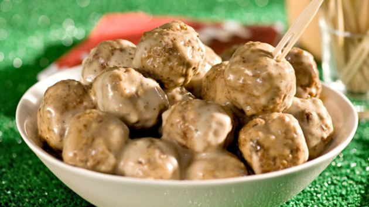

Meatballs Recipe

Ingredients
- 4 eggs
- 1 cup milk
- 8 slices white bread, torn
- 2 pounds ground beef
- 1/4 cup finely chopped onion
- 4 teaspoons baking powder
- 1 to 2 teaspoons salt
- 1 teaspoon pepper
- 2 tablespoons shortening
- 2 cans condensed cream of chicken soup, undiluted
- 2 cans condensed cream of mushroom soup, undiluted
- 1 can evaporated milk
- Minced fresh parsley
Directions
- In a large bowl, beat eggs and milk. Add bread; mix gently and let stand for 5 minutes. Add beef, onion, baking powder,
salt and pepper; mix well. Shape into 1-in. balls.
- In a large skillet, brown meatballs, a few at a time, in shortening. Place in an ungreased 3-qt. baking dish. In a bowlm stir soups
and milk until smooth; pour over meatballs. Bake, uncovered, at 350 degrees for 1 hour. Sprinkle with parsley. Yield: 8-10 servings.
Comments
Digusting.
13:37 11th September 2017
Username